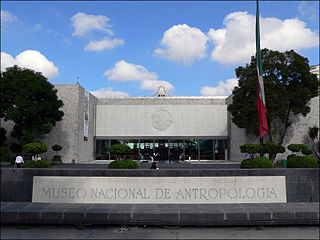

Antecedentes
El Museo Nacional de Antropología fue inaugurado en 1964 y es uno de los museos más importantes de México. Alberga una vasta colección de objetos arqueológicos de las culturas mesoamericanas.
Exposiciones
Nahuales sagrados, Filogonio Naxín
Galería del primer piso. Agosto de 2024 a octubre de 2024.
Acerca de la exposición
El Museo Nacional de Antropología presenta la exposición Nahuales sagrados del pintor mazateco Filogonio Naxín. La muestra está compuesta por veintidós pinturas inspiradas en las colecciones etnográficas del museo, en las cuales el artista utiliza técnicas tintóreas ancestrales para explorar el presente, el pasado y el futuro de la cosmogonía mazateca.
Todas las piezas son el resultado de la estancia del artista en el Museo Nacional de Antropología. La exposición estuvo disponible hasta el 20 de octubre de 2024 en la Galería del primer piso.
Precios
Entrada general: $95.00. Entrada gratuita a menores de 13 años, personas con discapacidad, profesores y estudiantes con credencial vigente. Los domingos, la entrada es gratuita al público nacional y a extranjeros residentes en México con documento vigente.
Ubicación
Av. Paseo de la Reforma y Calzada Gandhi S/N, Chapultepec Polanco, Ciudad de México.
Sitio oficial del Museo Nacional de Antropología
Consulta horarios, exposiciones y actividades en el sitio oficial del museo.